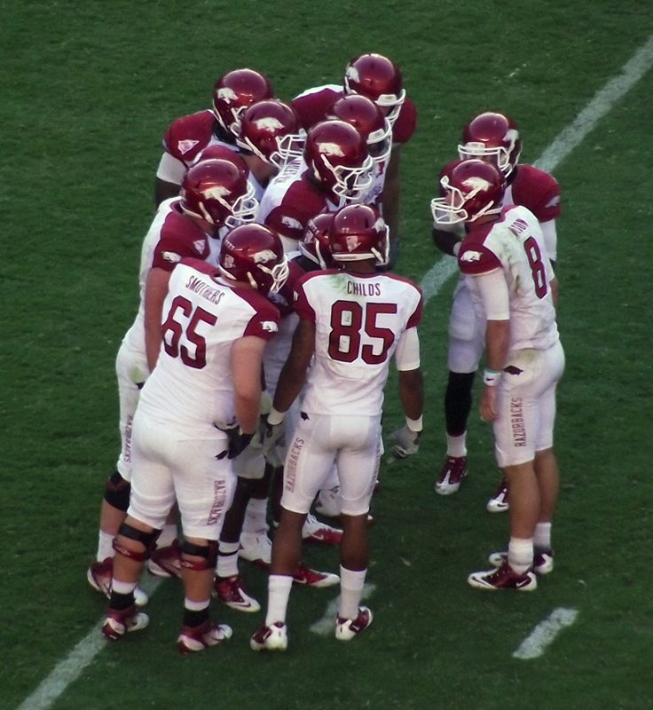

Brandon Burlsworth grew up in the small town of Harrison, Arkansas, a place where football was more than just a sport; it was a way of life. From a young age, Brandon was known for his passion for the game. But he wasn’t like the other kids, the ones who towered over their classmates with natural athleticism or a gifted arm. Brandon was, in many ways, the underdog.
He wasn’t tall, he wasn’t fast, and he wasn’t even the first one chosen when the teams were picked on the playground. But what Brandon had—what no one could teach—was an unyielding determination. He loved the game with a ferocity that could never be measured on a stopwatch or a scoreboard. He believed, deep down, that if you worked hard enough and stayed true to your goals, anything was possible.
.png)
By the time he graduated from Harrison High, Brandon had already proven to be a standout player on his high school team. But even with that success, there were no scholarships waiting for him. He wasn’t the biggest, the fastest, or the most polished. In fact, many Division I schools passed on him. The University of Arkansas, however, saw something special in him. They offered him a walk-on spot—meaning he would have to earn everything. No guaranteed playing time. No scholarship money. Just a chance.
Brandon didn’t hesitate. He packed his bags, left his family, and drove to Fayetteville to begin his college career as a walk-on offensive lineman. To most people, it would have been a humbling experience. But for Brandon, it was just the beginning of the road he had always known he would take.
At Arkansas, Brandon’s story quickly became one of legend—not because of natural ability, but because of his commitment to improvement. He worked tirelessly, never taking a day off. His daily routine was a mix of weight training, studying game tape, and focusing on the fundamentals. He was constantly in the weight room, constantly perfecting his technique. The coaches noticed his dedication, and soon, his hard work paid off.
Through his unbelievable work ethic and endless determination, Brandon not only earned a scholarship, but became team captain, All-SEC 1997-1998, First Team All-American in 1998, and the first All-American from the University of Arkansas in a decade.

Brandon was later drafted to the Indianapolis Colts in the 1999 NFL Draft in the third round (63 overal pick). Sadly, Brandon was killed in a car crash and died just 11 days after the draft and never had the chance to play a game in the NFL.
Brandon’s family was devestated at the lost of him.Brandon Burlsworth's funeral was held on Saturday, May 1, 1999, at Harrison High School Gymnasium in Harrison, Arkansas, attended by an estimated 2,000 people, including his football teammates and coaches, and family and friends. After the service, he was buried in Gass Cemetery in Omaha, Arkansas. The funeral was a significant event, with a display of his Indianapolis Colts jersey and other memorabilia, and the ceremony served as a time for reflection on his character and impact.